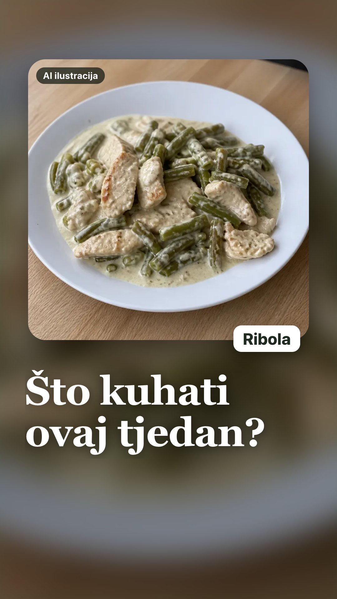
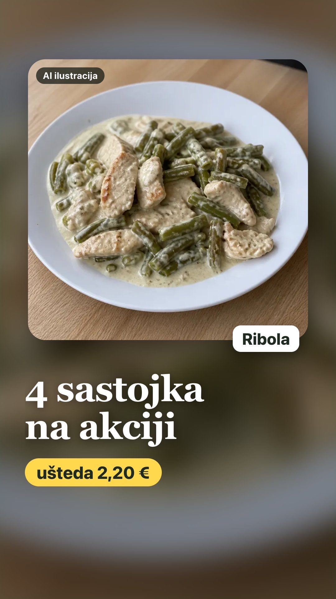
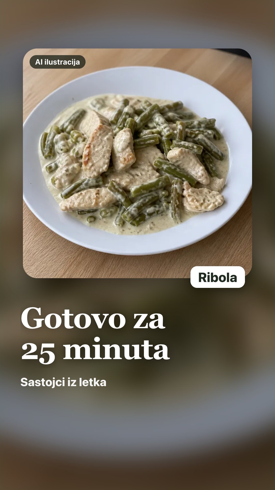
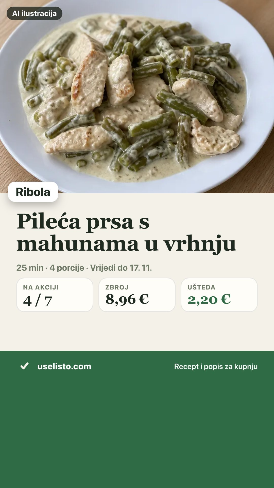
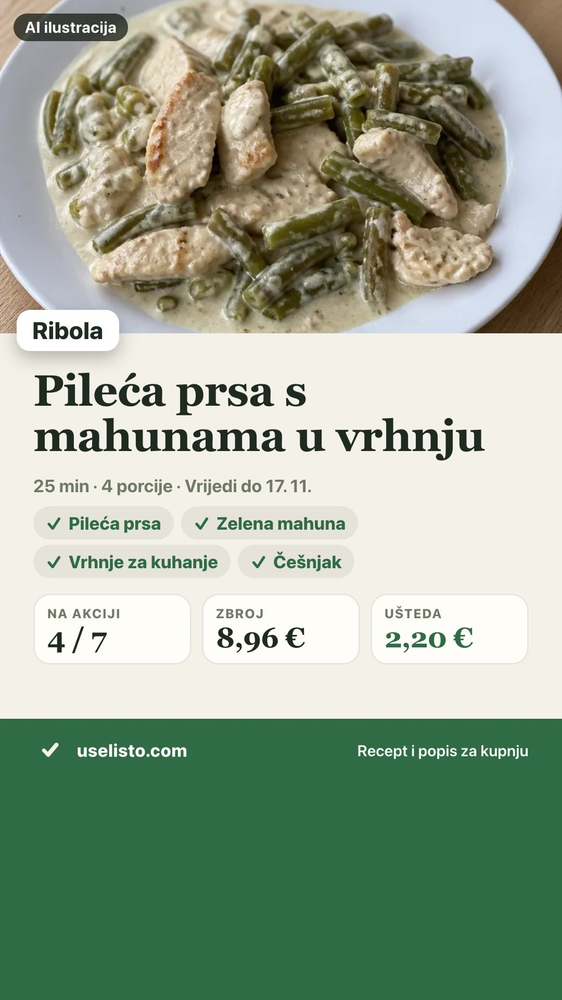
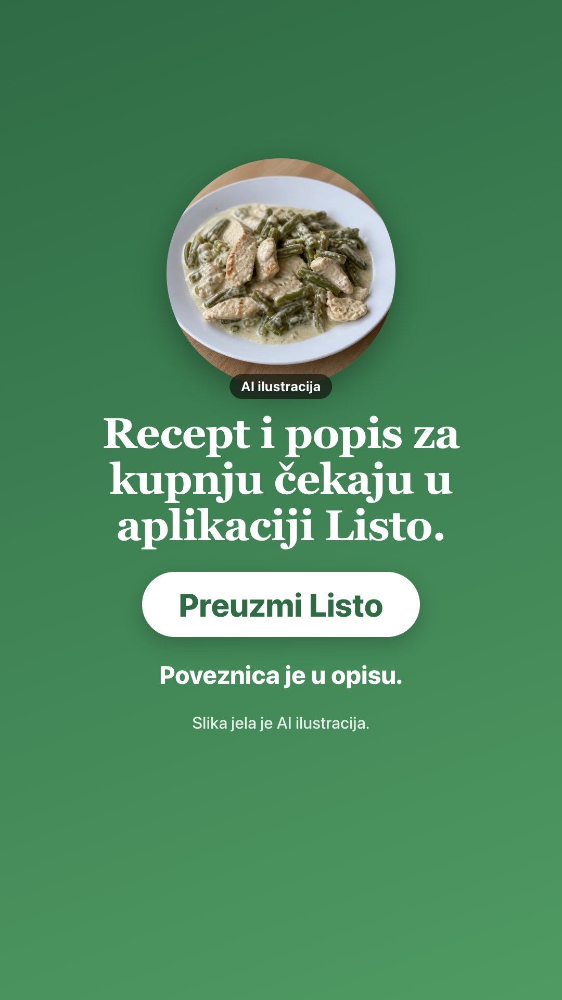
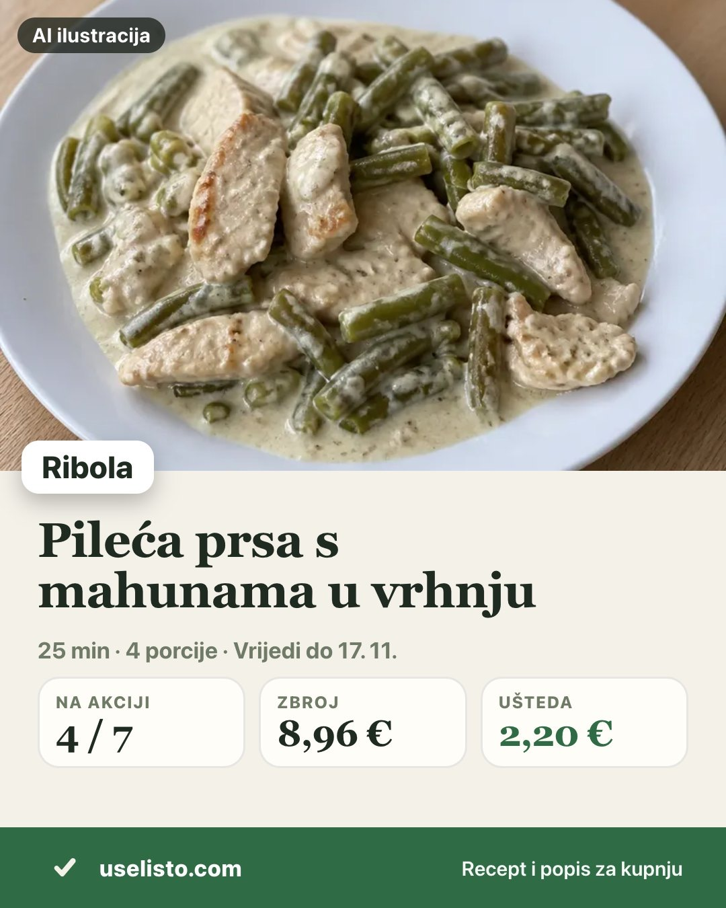
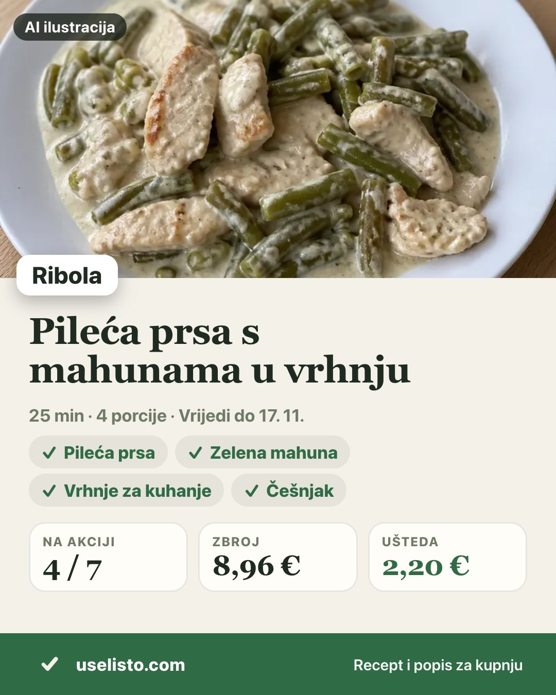
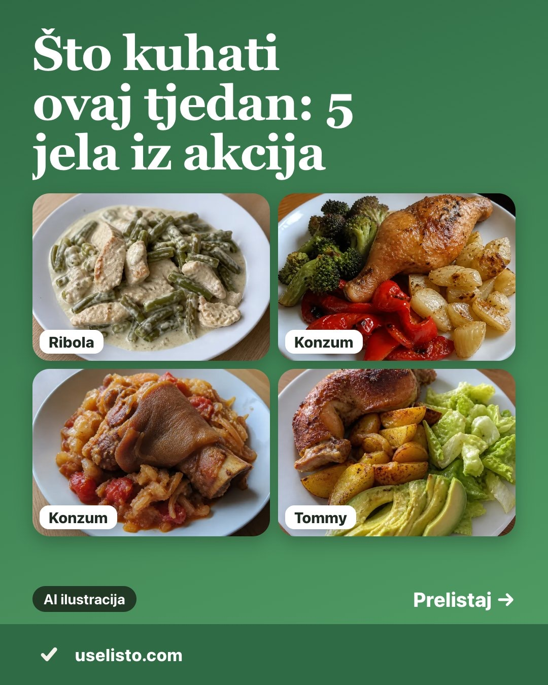
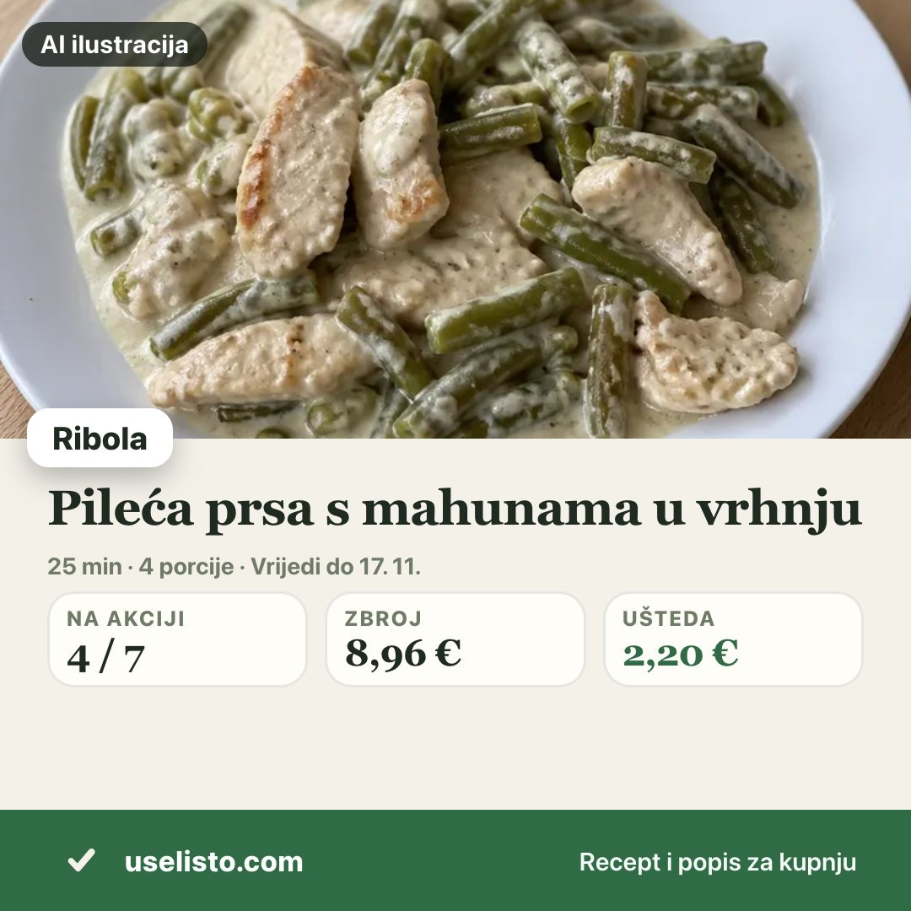

Stvarna jela iz javnog API-ja Liste (14. 11. 2026.), provučena kroz Listin recipeItem (feed), hubov TemplateData/RecipeCopy i predloške. Slike jela su AI ilustracije i tako su označene. Render na Macu (fontovi mogu malo odstupati od Linuxa). Zbroj je jedno pakiranje svakog sastojka na akciji, ne cijena jela; ušteda je prema starim cijenama iz letka. Nema proizvoda, marki ni cijena po sastojku.
uselisto (HR)
Ribola, Konzum, Tommy, Spar · tekst na hrvatskom
Video 9:16 (TikTok, Instagram Reel, Facebook Reel, YouTube Short): udica → kartica → poziv

A1 udica: pitanje Zadano uz „alternate“ (jelo po jelo)

A2 udica: broj + ušteda kad je ≥ 1 €

A3 udica: vrijeme samo jela ≤ 30 min

B1 kartica tri broja, bez sastojaka

B2 kartica + sastojci `voice.recipe_highlights`, ≤ 4, bez markeC poziv: komentar kanal kaže gdje je poveznica

C poziv: opis YouTube Short: poseban video
Video uzorci (bez glasa, 9 s; s glasom oko 12–14 s)
Video: udica pitanje tiho, bez titlova; glas bi produžio karticuVideo: udica broj
Slika 4:5 (Facebook stranica, Instagram) i carousel

D1 objava 4:5 jedno jelo; poveznica u prvom komentaru

D2 4:5 + sastojci

E1 naslovnica carousela tjedni pregled, slajdovi dalje su kartice (D1)

1:1 kvadrat rijetko, ali postoji
Ostala jela (udica kako je brend zadao + kartica 4:5)